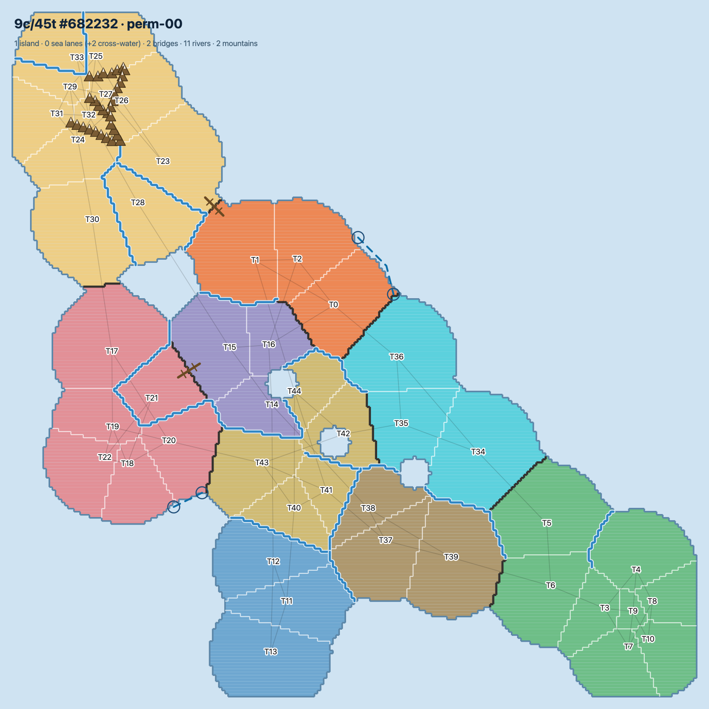
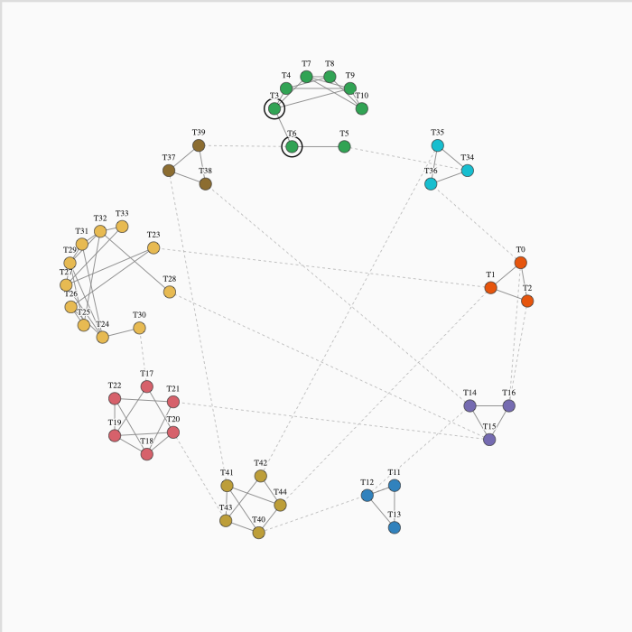
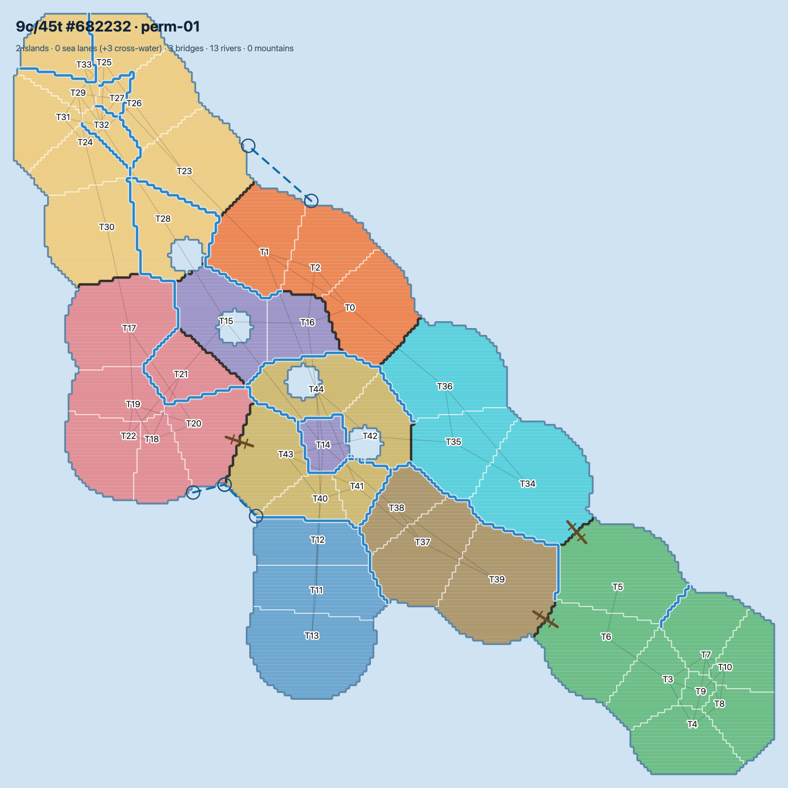
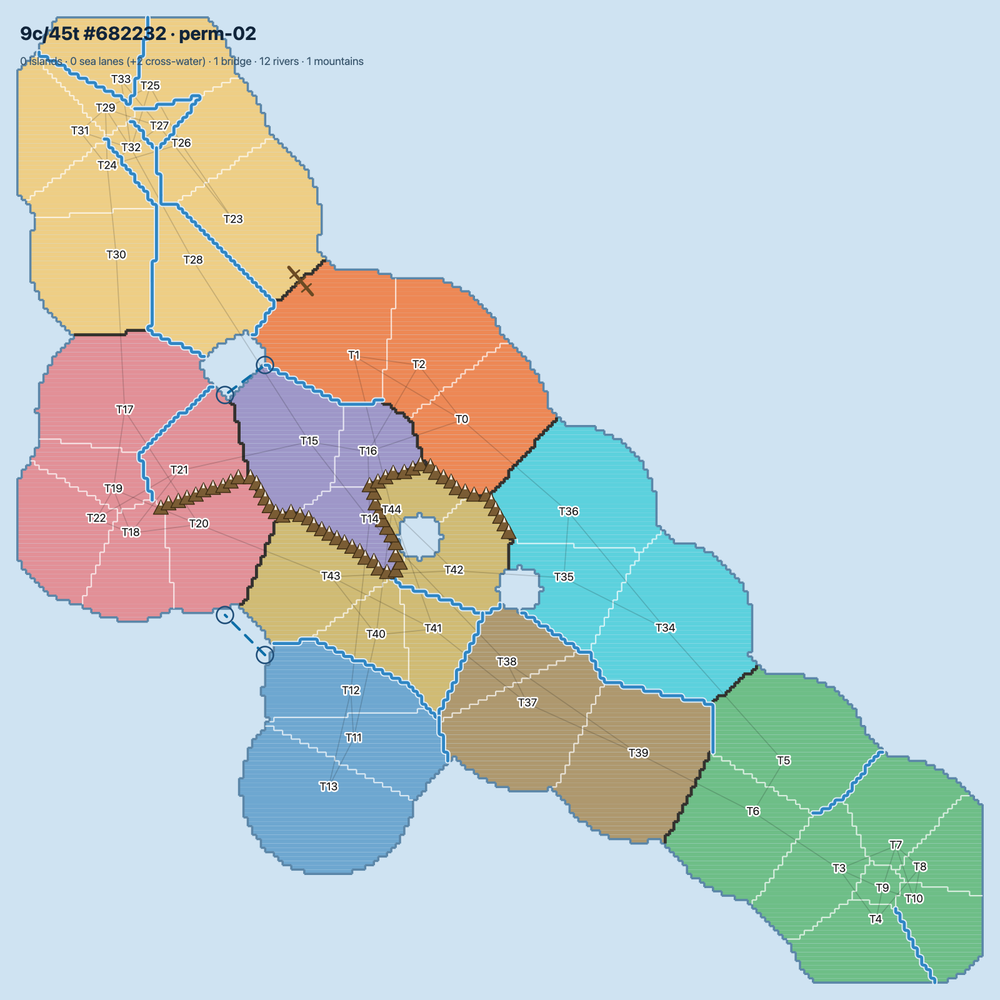
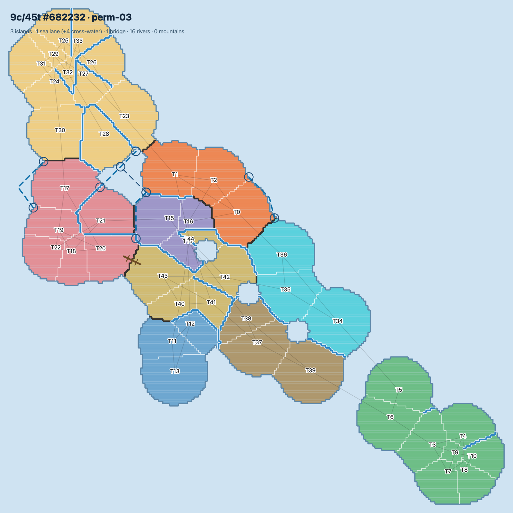
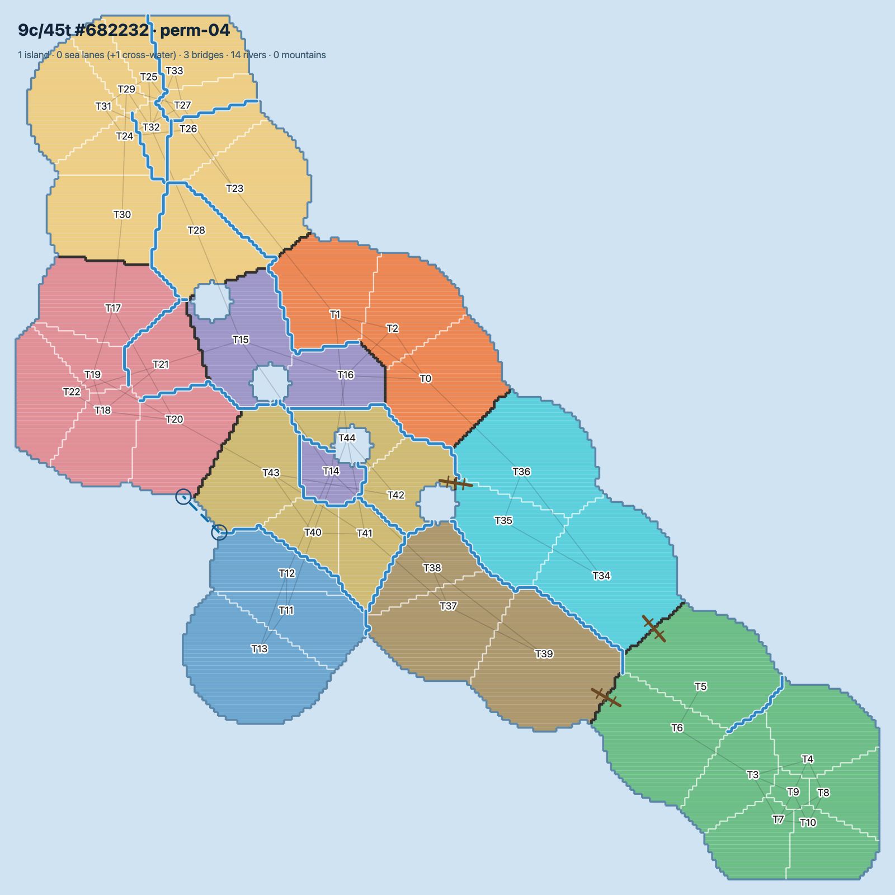
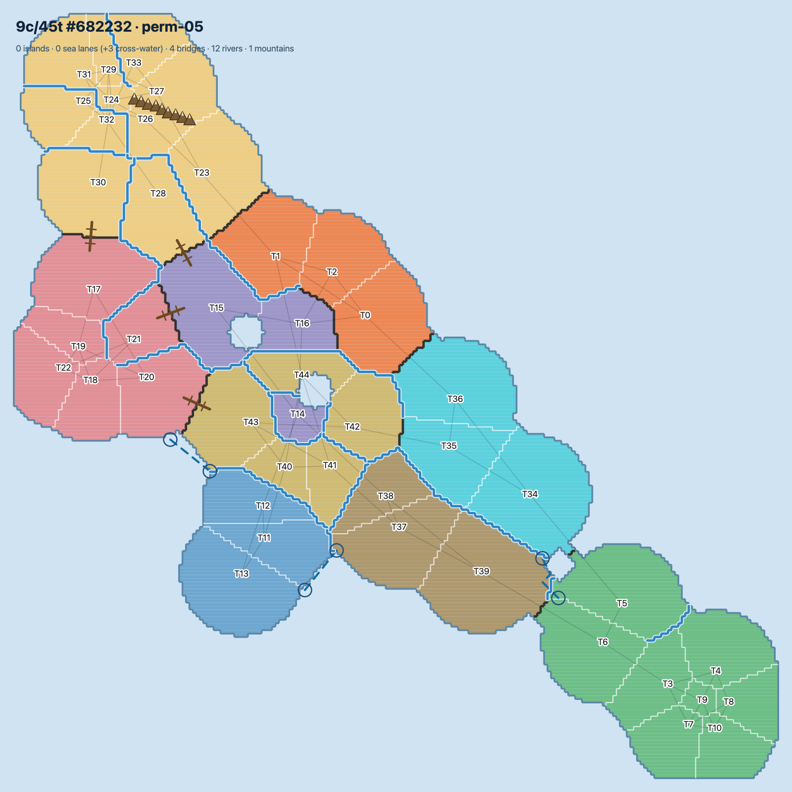
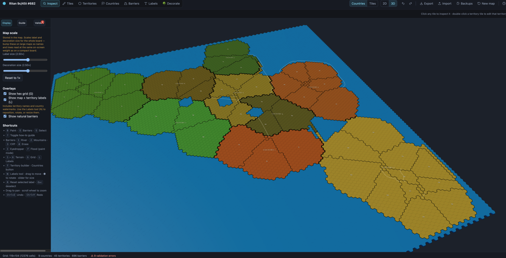

Is the classic 42-territory, 6-country board actually the
best board for six players — or just the familiar one? We decided
to find out the only honest way: by treating a board as a vector we could
generate, mutate, and play millions of times.
By Zach Mailloux·
45,000+board permutations explored
4M+games simulated
87.0best buildable composite (beats World ≈ 76)
Every number on this page traces to a
logged experiment in risk-lab. The flash rides on real measurements — never instead of them.

FIG-1. The payoff — the chosen board, 9c/45t #682232
(realistic composite 87.0, beats World Risk), rendered as a real, playable board.
1
The question
Classic Risk is the baseline everyone knows. But "everyone knows it" is not the
same as "it's the best six-player board." So we stopped arguing and started
measuring.
The trick is to stop thinking of a board as a place and start thinking of
it as a vector: a list of territories, a set of countries each with a
troop bonus, and an adjacency graph of who can attack whom. Stated that way, a
board is just data — and data can be generated, mutated, and scored.
Success = a board that beats the classic baseline on a blend of
balance and funwithout a degenerate read: no unbeatable
fortress country, no kingmaker turn order, no permanent snowball.
FIG-2a. The board everyone pictures — the classic Risk world map: six continents of art, names, and history.
strip the art — keep the structure↓
FIG-2b. The same six continents, distilled to a vector and held in
their world-map positions: 42 territories, 6 colour-coded countries, 83 adjacency edges.
Dashed lines are sea routes; the ringed nodes are chokepoints — Central America,
the lone North–South link, and Indonesia, the single gateway into Australia. This is
the data we score.
Country 1Country 2Country 3Country 4Country 5Country 6
The questions we chased
Is the classic board really the best for six players — or just the one we all grew up with?
What actually drives fun: the whole architecture of a board — how many countries, how many ways in and out of each, where the chokepoints sit, how sprawling it is — or does a single lever quietly dominate the rest?
Is there a right number of countries for a six-player table, or does the sweet spot slide as the map grows?
When does a strong country tip into an unbeatable fortress — and can you spot that line before anyone rolls a die?
Does a board that's fair in a vacuum stay fair once real players forge alliances, gang up, and betray?
Is there a principled formula for a country's bonus — one that reads its size and exposure — instead of hand-tuned magic numbers?
2
The players we built
To score a board you have to play it — thousands of
times, well. So we built a from-scratch classic-Risk engine and seated it with six
expert heuristic AI players. But six bots blindly trading territory
isn't a real table. Real Risk is social. So we taught the AI to behave like people:
open (race the small country)ally / form a trucebetraygang up on the leaderkingmakerevolt against a runaway
FIG-3. The decision loop a single expert seat runs every turn.
FIG-4. Diplomacy is a state the AI consults: a truced neighbour
is neither target nor threat — until the pact breaks.
Crucially, every pact forms during
play, never before placing — so the test is a real six-player table, not a scripted
one. A truce that never breaks is itself a finding: it stalls the game to the
round cap.
3
Simulating the matrix
One board, played once, tells you nothing — dice are random. So we
played each board hundreds — up to a thousand — times and read the aggregate. Then
we did that for thousands of boards, across every opening and every diplomacy scenario.
That cross-product is the permutation matrix: each generated board
is replayed against 6 opening strategies and 6 diplomacy
scenarios, and the finalists are each averaged over 1,000 seeded games with bootstrap confidence intervals.
45,000+
board × opening × scenario permutations
4M+
individual games rolled out
1,000
games per board on the finalists
dozens
of parallel search runs
It started with an overnight search of 1,000 candidates and a four-run sweep across scenarios, then a from-scratch buildable-board re-search (dozens of parallel passes) whose finalists were each confirmed over 1,000 games with bootstrap intervals. Captures a lot, stores a little — only each board's aggregates survive; the per-game records are thrown away.
4
How we measured
Every game produces metrics in three families — balance
(is it fair?), fun (is it a good story?), and structure
(the board's shape). One composite score rolls them into a 0–100 number so
permutations can be ranked: 40% balance + 60% fun. Structure is a fourth
diagnostic lens — degree, chokepoints, diameter, border ratio — that explains where a
board lands without being weighted into the score. Because the 40/60 split is a chosen
convention, not a law of nature, we always read the components, not just the total.
Realistic house rules sharpen the
readout: a 70/70 dominance win ends a game once a player holds ≥70% of
territory and troops (you don't grind to the last army), and a swarm
rule breaks a runaway's alliances the moment they pass half the board. New panels
report how games are won — by dominance, elimination, or the round cap.
5
What the matrix said
FIG-5. Where the good boards really live. The buildable winners cluster small (8–9 countries, ~40–53 territories) — right by World’s size, not the big-board region the all-war score flattered to ~95 with un-drawable hubs.
Fewer & smaller win
8–9 countries on ~40–53 territories — right by World’s 42. Add more and fragmentation bites: too few territories per country and one cheap country decides games.
Buildability is the gate
Every territory must be drawable: attackable from ≤5 others, bordering ≤4 countries. Un-drawable cross-map “hubs” had inflated the old ~95 scores by ~17 points.
Openings, not diplomacy
Truces, swarms and betrayal barely move a board (±0–7). What breaks the weak ones is smart setup — so we rank on opening-robustness, not the random deal.
Score fun, not just fairness
A flat “fair” board can be a dead grind. We score a live bonus-economy arc (progression) alongside fairness — the winner builds and stays contestable.
FIG-6. Composite falls as you add countries past the sweet spot (all-war means 6c 89.7 → 9c 87.3); the penalty persists under the realistic test (r = −0.47 across 70 boards).
FIG-7. The table plays like people: simply racing the most defensible country wins 57% against a fair share of 17% — no specialist opening beats it.
The nitty-gritty — expand for the detail behind each finding
The fragmentation trap & the country-count sweet spot
The single biggest unfairness driver isn’t the fortress country everyone fears — it’s fragmentation. Cut too few territories into too many countries (territories < ~5–6 × countries) and one cheap country is a big slice of the map: it decides 21–33% of games, they end too fast, and one play-style dominates. The penalty is real and monotonic (r = −0.47 across 70 boards) — which is why the buildable winners sit at 8–9 countries on ~40–53 territories, not the big 75–88-territory boards the all-war score once flattered to ~95.
The “false-fun” trap — the tuning that mattered most
The scariest result was an early one: the score happily crowned the wrong board. A handful of big, near-equal countries on lots of territory scored ~95 and looked perfect — but completing a country took so many conquests that the bonus economy went dead: no snowball, no build-up, just a flat grind the metric mistook for “fair and contestable.” The fix: push the generator away from equal blocks toward traditional-Risk variety (a few sprawling countries, several small defensible ones) and add a progression score — whole countries the winner already held at midgame — so a real risk/reward arc gets measured. We never rank on the composite alone again.
Buildability — capping attack-degree (≤5) and bordering countries (≤4)
A board can be a perfectly valid graph and still be un-drawable. Left uncapped, the generator bred territories attackable from five, six, even seven directions — cross-map “hubs” you can’t lay out as a real board, and which inflated the score by letting nobody fortress up. Two hard caps fix it: a territory is attackable from at most 5 others (real Risk’s busiest crossroads top out at 6) and borders at most 4 distinct countries. Adding them voided the old ~95 winners (−~17 composite) and forced a fresh search over ~1,400 buildable boards.
Diplomacy is fine — openings are the real test
We stress-tested the winners properly, and the reassuring half holds: truces, swarms and betrayal barely move a board (emergent diplomacy: ±0–7 points). The unreassuring half is what the random army deal was hiding — once the table claims and stacks strategically at setup, the all-war ranking falls apart: weak boards drop −9 to −32 points, and the all-war “best” board (90) sinks to the realistic worst (58).
The economy dial — fairness vs a rich bonus economy
Fairness and a rich bonus economy genuinely trade off. The boards where winning most runs through completing countries are 11–12-country boards — but they cost about 10 composite points of fairness. A real design knob, not a free lunch; the 9-country winner is the sweet spot that keeps a live economy without paying the full fragmentation tax.
A bonus you can derive — the perfect-bonus formula
A bonus you can derive
The perfect-bonus formula
Classic Risk's continent bonuses — 2, 2, 3, 5, 5, 7 — read like folklore. They
aren't: a country's reinforcement bonus falls straight out of two things you can measure
from the graph — how much ground it holds, and how exposed that ground is.
bonus= round( size÷1.8+λ·borders ), min 1
size — territories in the country: the reward for holding more ground.
÷ 1.8 — a calibration divisor, tuned so the model lands the classic board almost exactly.
borders — the country's entry points: how many ways in you have to defend.
λ — the defensive premium (border-relief): at 0 the bonus is pure size; raise it and hard-to-hold, many-bordered countries get paid more.
min 1 — every country is worth something, so none is dead weight.
size
classic
size÷1.8
4 terr
2
2 ✓
6 terr
3
3 ✓
7 terr
5
4
9 terr
5
5 ✓
12 terr
7
7 ✓
Five of six classic bonuses land on the nose; only Europe (7 territories) comes out a troop light.
But the number itself isn't the dial — bonus ÷ borders is. Push
that ratio too high and a country becomes a turtle fortress nobody can crack; too low and no
one bothers completing it. That single ratio — not the headline bonus — is what the sweep tunes for
fairness, and it's exactly the λ knob the lab turns.
The corrected, buildable search produced the 10 best 8-country and 10 best 9-country maps — browse them as physical boards or the full 20-map analysis. The winner, 9c/45t #682232, is the board laid out across this page. Full trail: research-paper.md Iterations 12–15.
6
From matrix to map

FIG-8a.The final matrix we arrived at — the abstract graph
of the chosen board (9c/45t #682232): 45 territories = nodes, colour =
the 9 countries, solid = intra-country adjacency, dashed = cross-country borders, ringed =
chokepoints. Balance is decided at this layer; everything below is a way to draw it.





FIG-8b. From that matrix we mocked up various physical
representations of it — accounting for natural barriers like lakes, mountains, and
rivers, plus sea routes to islands (composite 87.0, beats World Risk;
buildable — every territory attackable from ≤5 others and bordering ≤4 countries).
All 10 viable maps →
A winning graph is still just data. The last step turns it into
something you can look at and play: a deterministic layout pipeline takes
the node graph → carves the biggest country-cluster into a mainland and cuts weak
peripheries loose as islands → classifies every attack edge as
land / bridge / sea → routes sea lanes through real water → fits placeholder
mountains and rivers onto the borders they block → and hands the result
to the hex map editor as an editable, playable MapDocument.
FIG-9. Graph → board → hexes. The handoff that makes a measured
board a playable one.

FIG-10. The nearly-finished product — the chosen board loaded into the real
hex map editor and rendered in 3D, ready to play. The bones are measured;
what's left is craft.
And this is where the machine bows out. The measurable
half — is the board fair, is it fun, is it buildable — is what
simulation can answer, and it's answered. From here the work turns artistic:
naming the lands, theming the terrain, hand-placing the rivers and mountains, sketching the art,
and tuning the feel at the table. AI got the skeleton right; giving the map a soul is a human
job — and that's exactly as it should be.